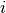

GradientHAWP¶
About the GradientHAWP class¶
The WaveBlocks Project
@author: R. Bourquin @copyright: Copyright (C) 2010, 2011, 2012, 2013, 2014 R. Bourquin @license: Modified BSD License
Inheritance diagram¶
Class documentation¶
- class WaveBlocksND.GradientHAWP¶
This class implements the computation of the action of the gradient operator applied to a Hagedorn wavepacket .
- apply_gradient(wavepacket, component=None, as_packet=True)¶
Compute the effect of the gradient operator on the basis functions of a component
 of the Hagedorn wavepacket .
of the Hagedorn wavepacket .Parameters: - wavepacket (A HagedornWavepacketBase subclass instance.) – The wavepacket containing .
- component (Integer or None.) – The index  of the component .
- as_packet (Boolean, default is True.) – Whether to return a full packet.
Returns: A list of length
 or a single pair of extended basis shapes
or a single pair of extended basis shapes  and new coefficients .
If requested, copies of the original wavepacket are returned with these new values set.
There are
and new coefficients .
If requested, copies of the original wavepacket are returned with these new values set.
There are  packets, one for each space variable component
packets, one for each space variable component  of the gradient.
of the gradient.- wavepacket (A HagedornWavepacketBase subclass instance.) – The wavepacket containing
- apply_gradient_component(wavepacket, component)¶
Compute the effect of the gradient operator on the basis functions of a component
of the Hagedorn wavepacket .Parameters: - wavepacket (A HagedornWavepacketBase subclass instance.) – The wavepacket containing .
- component (Integer.) – The index of the component .
Returns: Extended basis shape and new coefficients for component
. The coefficients are stored column-wise with
one column per dimension  . The array is of shape
.
. The array is of shape
.- wavepacket (A HagedornWavepacketBase subclass instance.) – The wavepacket containing